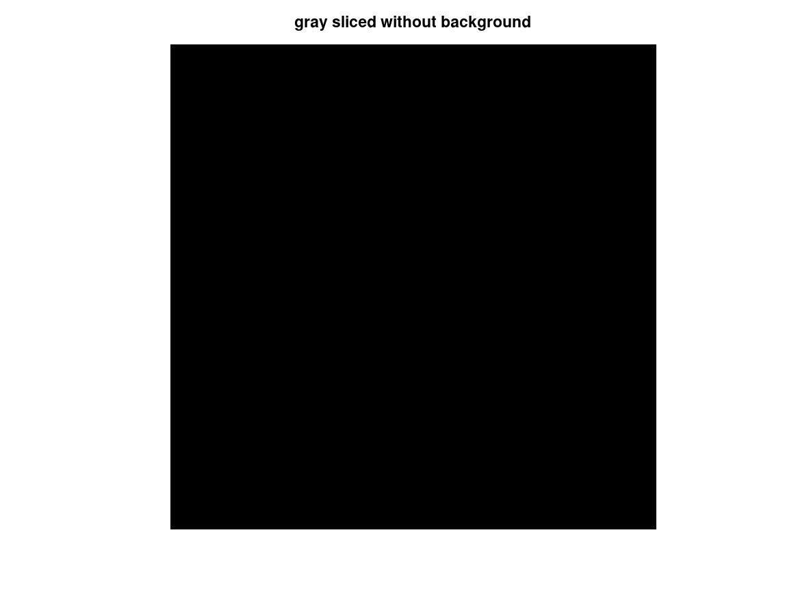
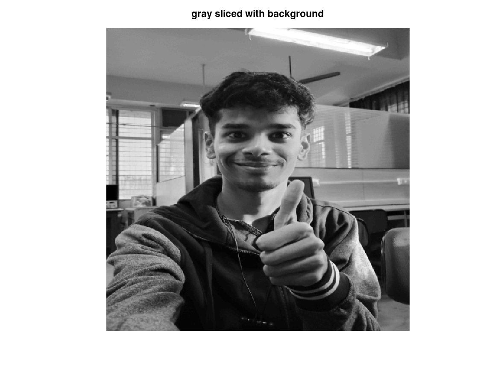
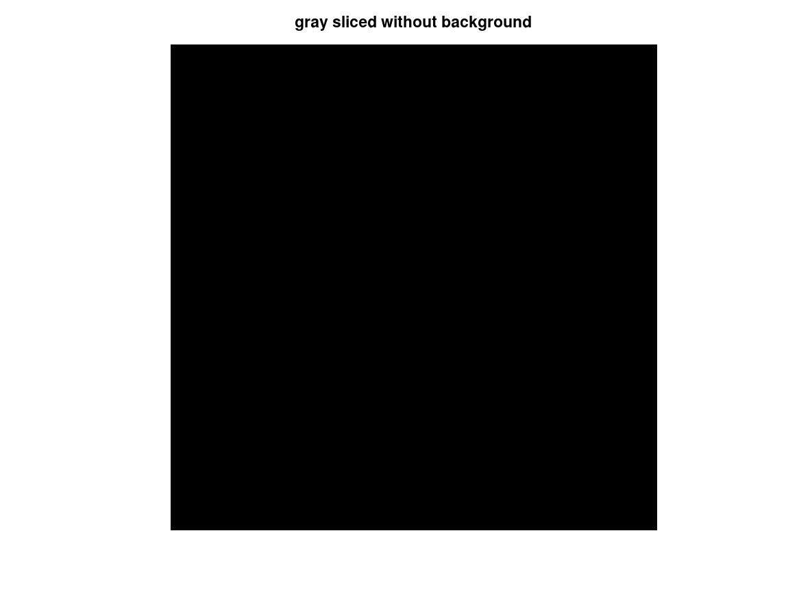
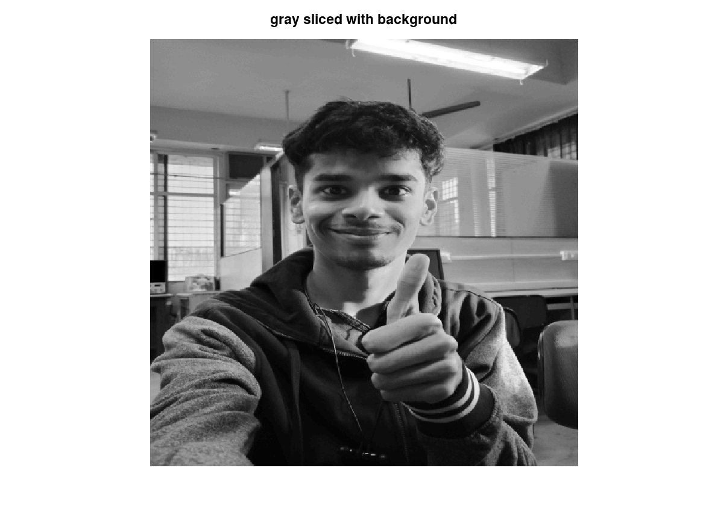

clc; clear; %f = [7 4 3 ; 2 1 6 ; 5 4 0 ] f = imread('Img_3.tif'); [row,col]=size(f); T1 = 100; T2 = 150; for x= 1:1:row for y= 1:1:col if f(x,y)<=T1 && f(x,y)>=T2 g1(x,y) = 255; % without background g2(x,y) = 255; % with background else g1(x,y) = 0; g2(x,y) = f(x,y); endif endfor endfor g1; g2; figure(1), imshow(uint8(f)), title('Original img') figure(2), imshow(uint8(g1)), title('gray sliced without background') figure(3), imshow(uint8(g2)), title('gray sliced with background')
 
